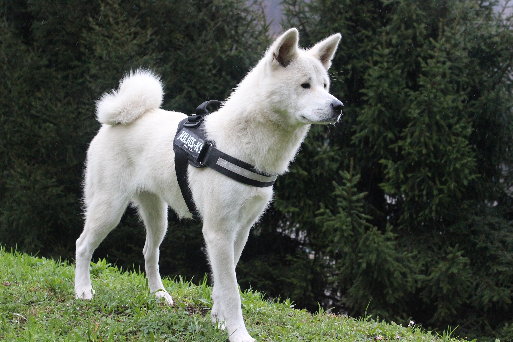
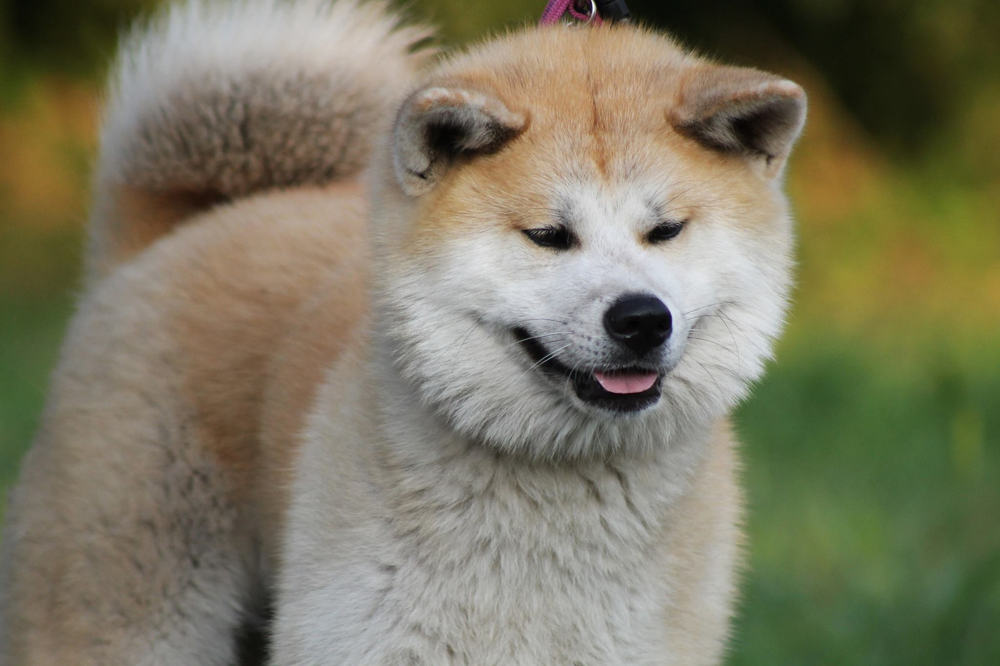

Akita Inu
About the dog
- Japanese breed
- large dog
- thick double-coats
- short coat
- colors : red, sesame, brindle, fawn, white
- strong personality
- Males : 25-27 inches and females : 22-25 inches
- Life Expectancy: 10-12 years
« The more I see men, the more I admire dogs. »
-Madame de
Sévigné (1626-1696)

Pros and cons of the breed
- ✔️ They are quiet and not prone to barking
- ✔️ Their exercise requirements are not complex or vigorous
- ✔️ They resist easily to any wheather
- ✔️ They are capable to adapt to any lifestyle
- ❌Their strong personality can be challenging to train
- ❌ They need careful socialisation
- ❌ Can be expensive to insure
